The visual archive
History,
still moving.
Field photographs, community encounters and physical artifacts documenting the people and purpose behind Vietnam Combat Music.
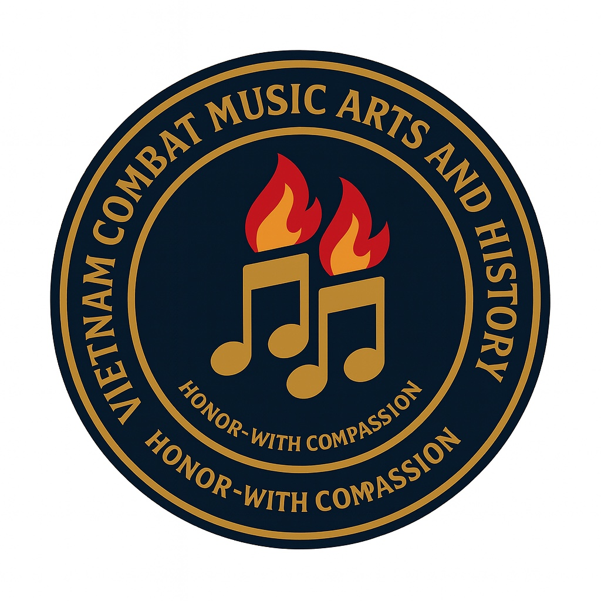
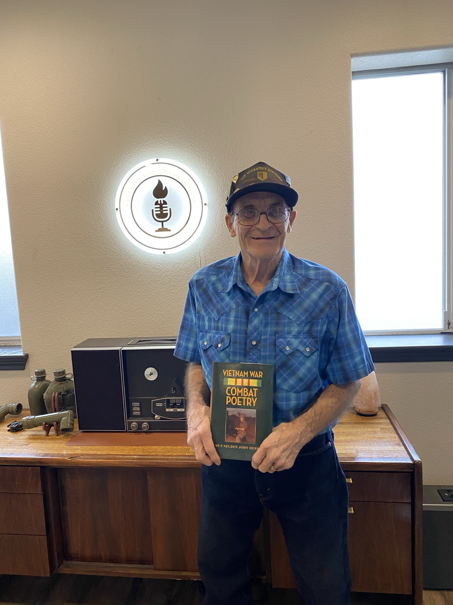
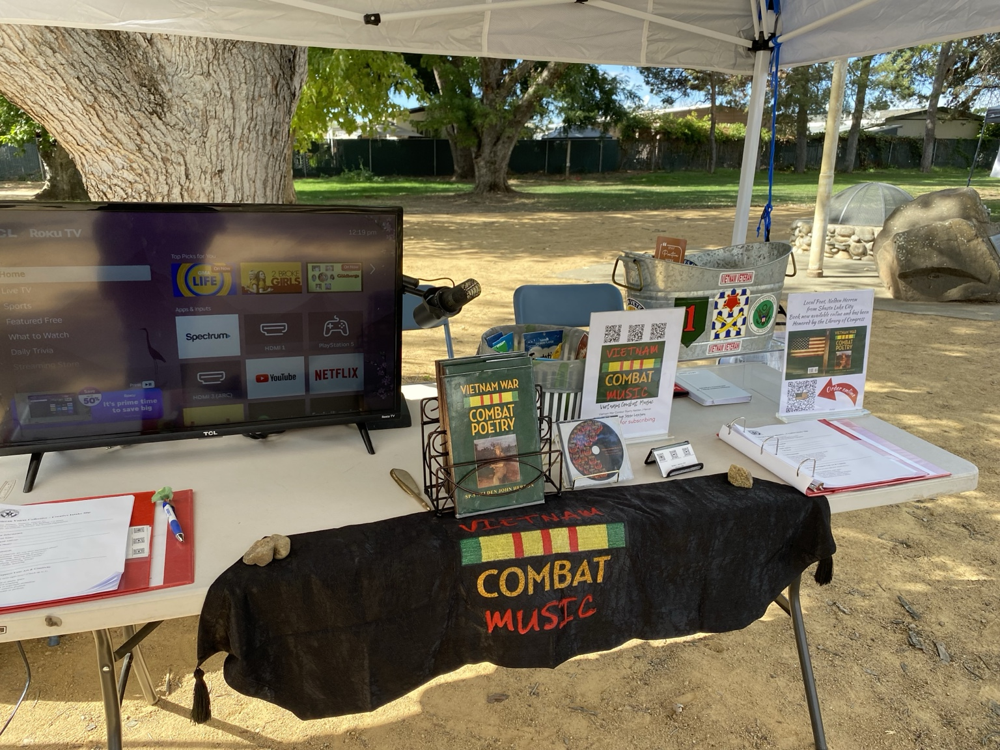
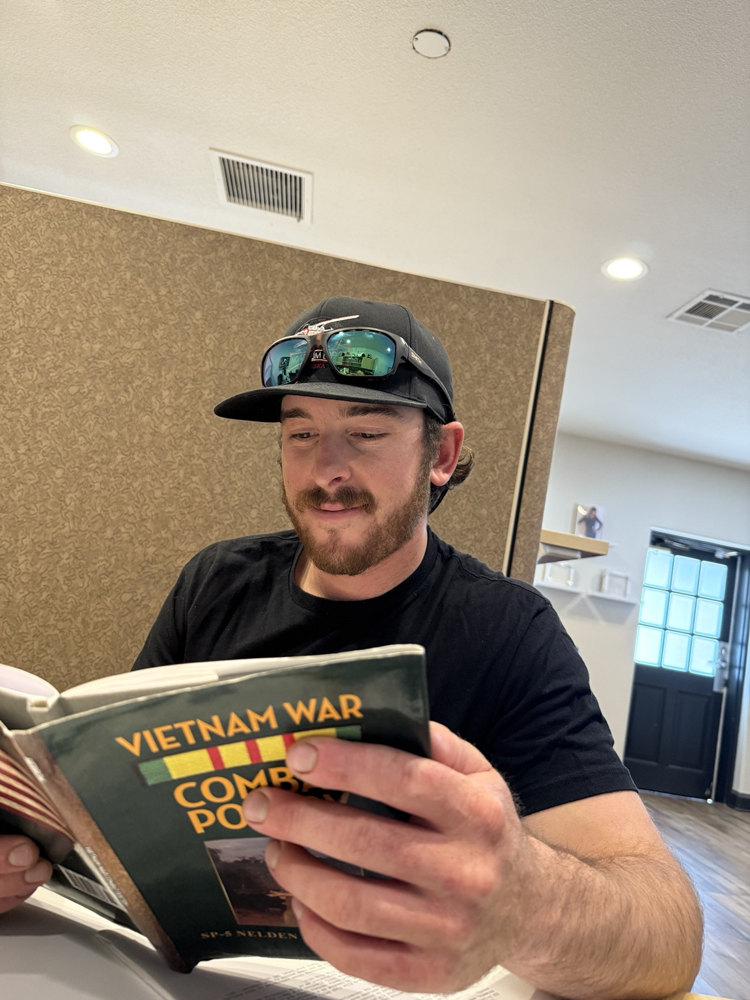

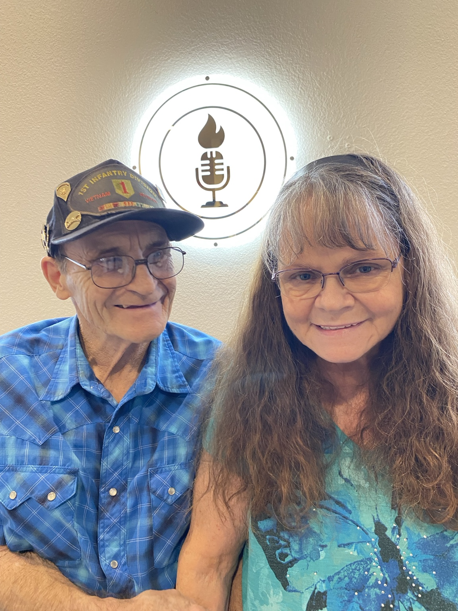
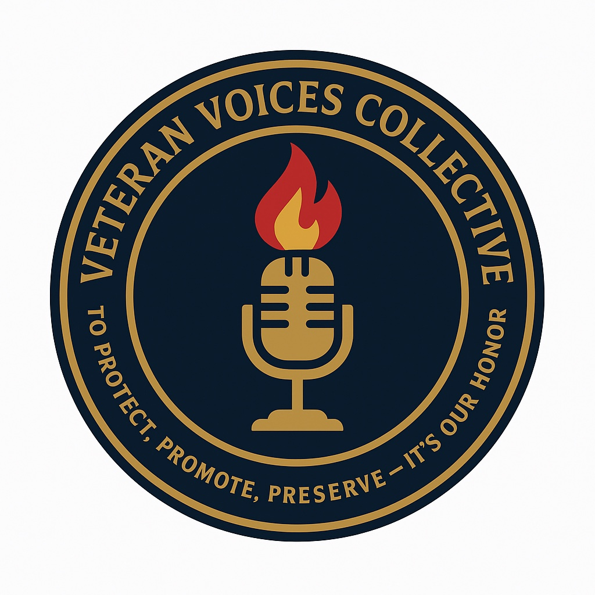
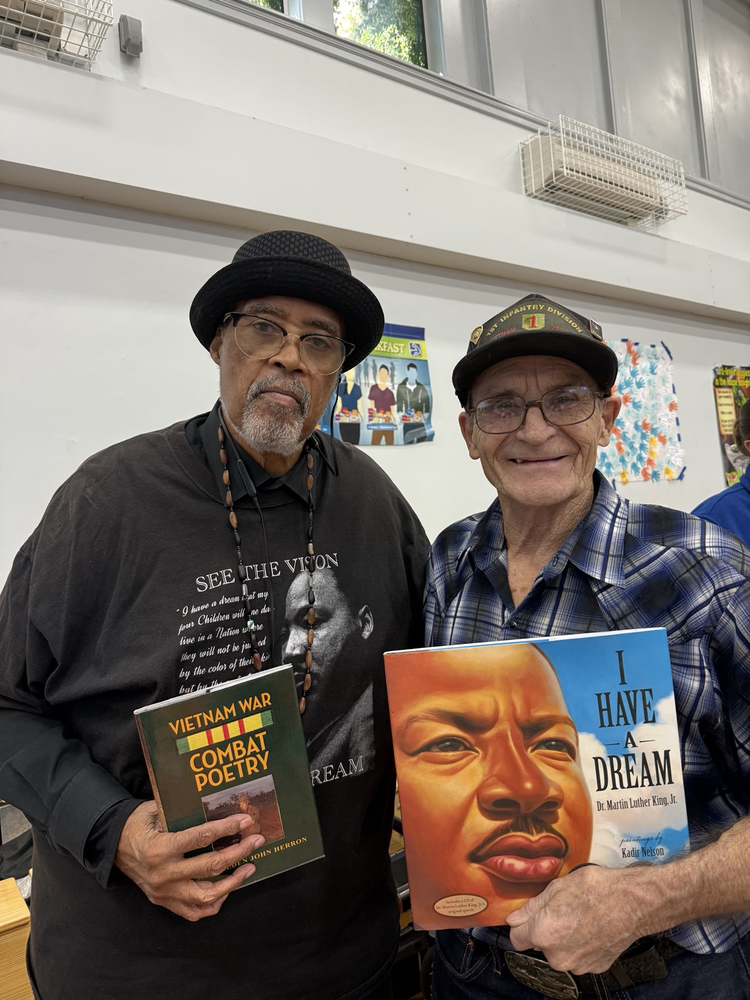
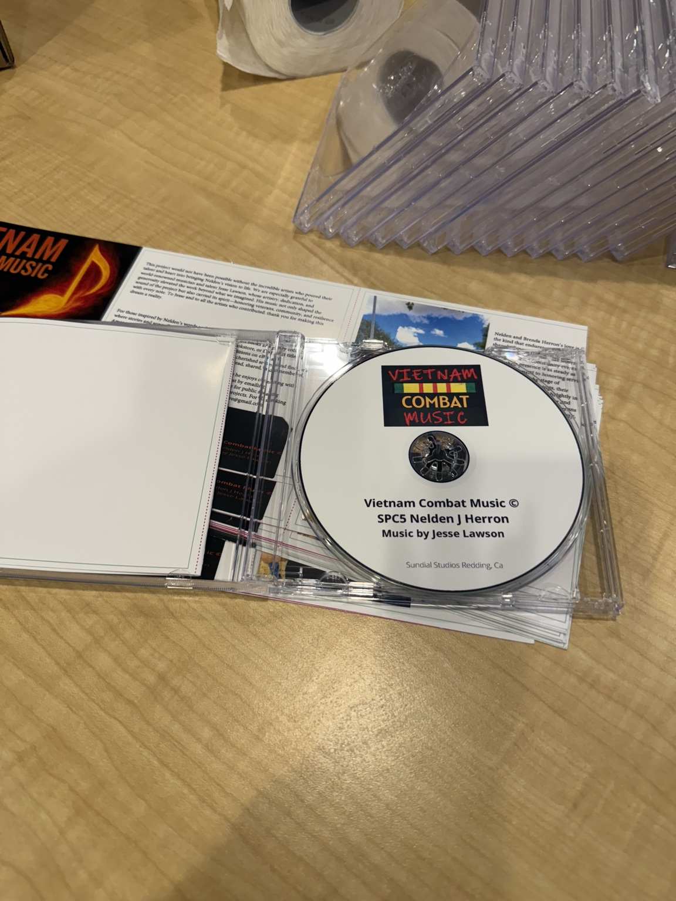
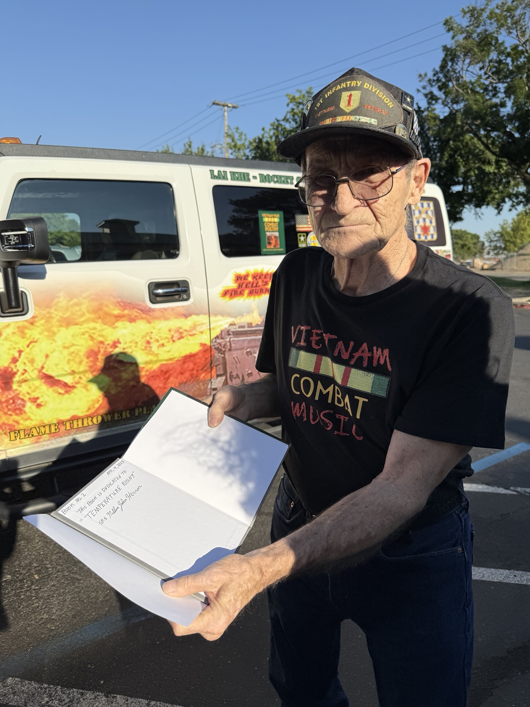
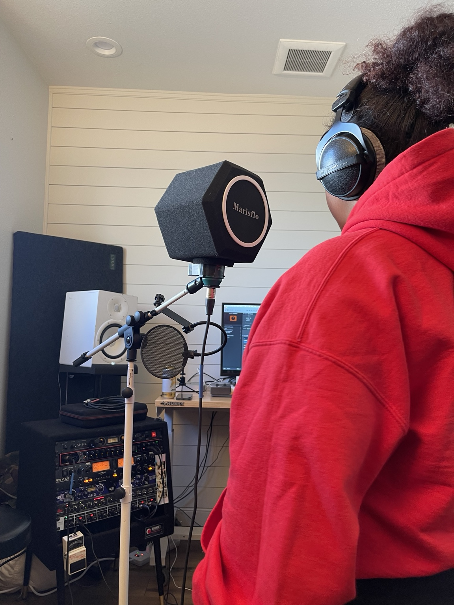
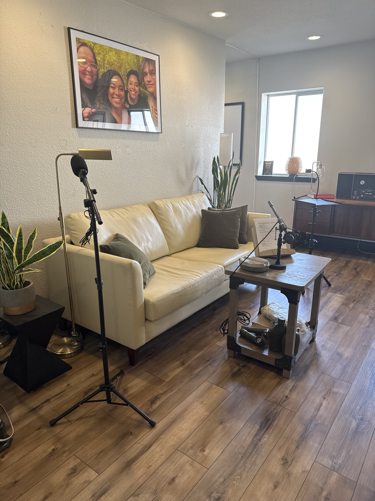
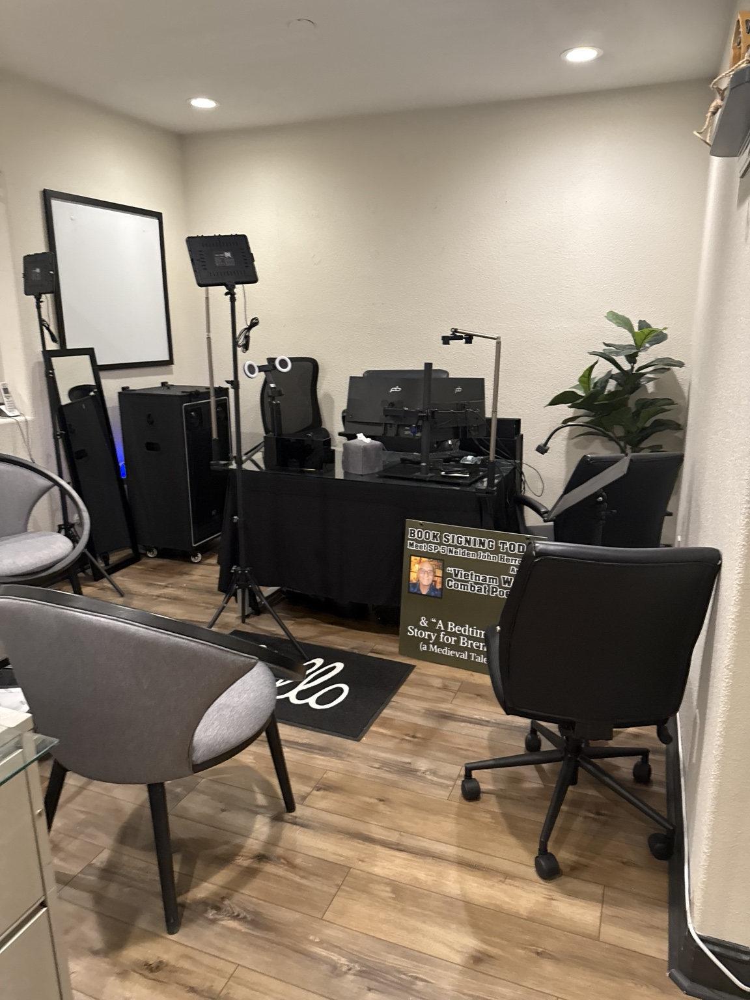
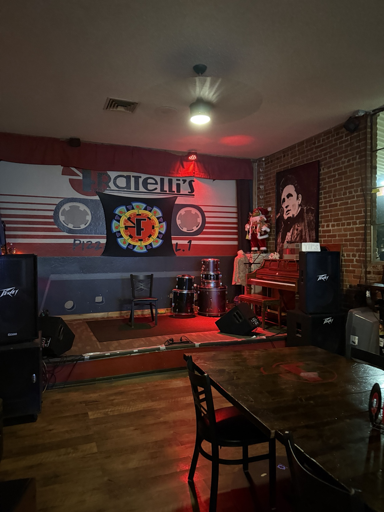
Not nostalgia.
A living record.
Every photograph is part of a larger archive connecting combat testimony, poetry, music, public engagement and intergenerational memory.
Explore Veteran Voices Collective →